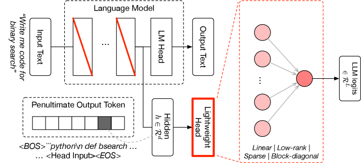
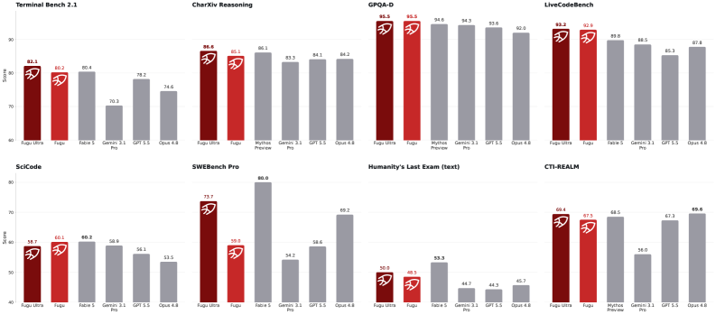
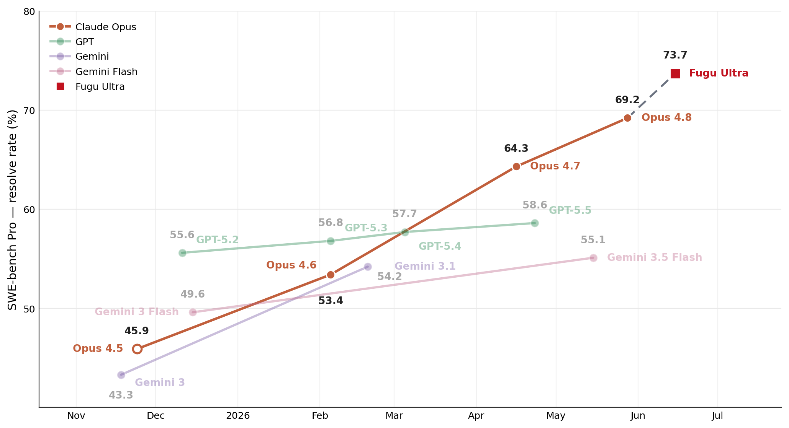
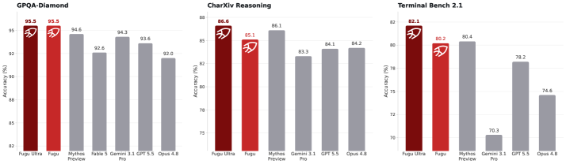
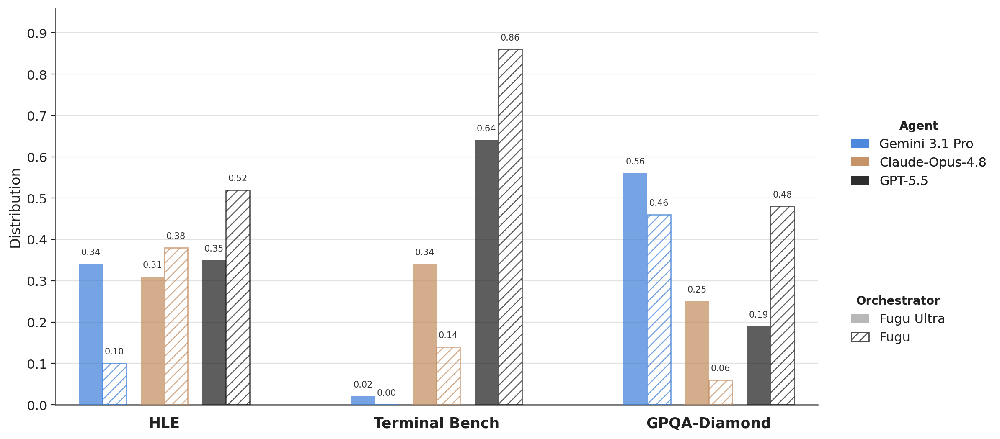
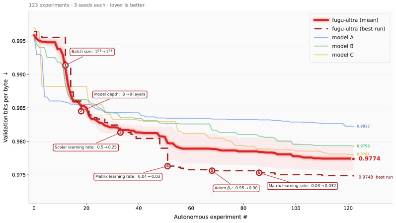
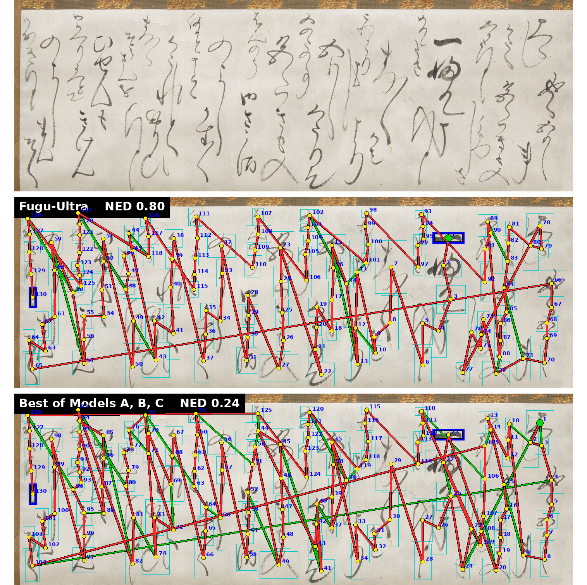
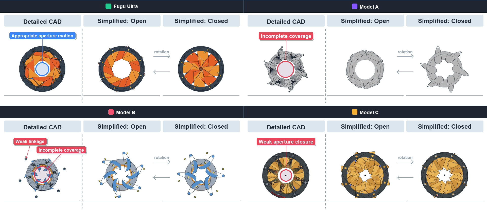
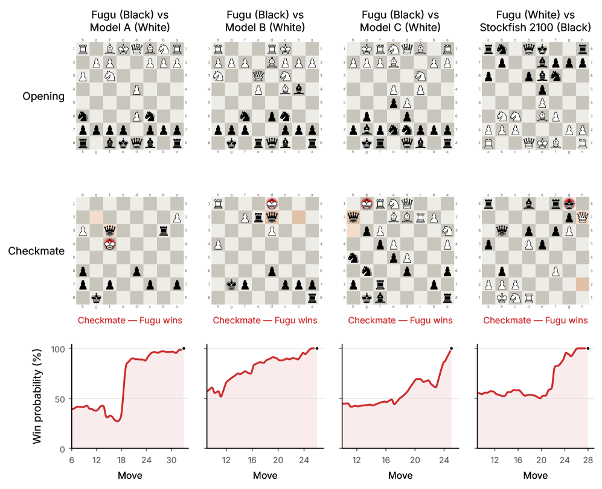
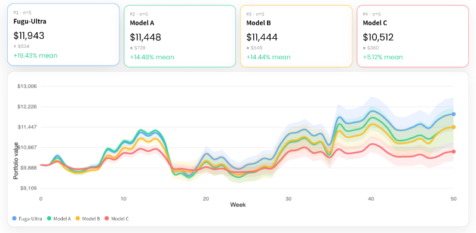

Sakana AI's Fugu and Fugu-Ultra are not new foundation models — they are orchestrator language models that decide which frontier model(s) to call. Fugu picks one worker per query through a lightweight selection head (latency ≈ a single call); Fugu-Ultra writes a whole natural-language multi-agent workflow per query. Trained with SFT + evolution (Fugu) and GRPO (Fugu-Ultra), the orchestrator beats every individual frontier model it routes to on SWE-Bench Pro, Terminal Bench, GPQA-Diamond, HLE and more — the report's pitch: orchestration is a new scaling axis. Sakana AI의 Fugu와 Fugu-Ultra는 새 파운데이션 모델이 아니라, 어떤 프론티어 모델을 부를지 결정하는 오케스트레이터 언어 모델이다. Fugu는 가벼운 selection head로 쿼리마다 워커 하나를 고르고(레이턴시 ≈ 단일 호출), Fugu-Ultra는 쿼리마다 자연어로 된 멀티 에이전트 워크플로 전체를 써낸다. SFT+진화(Fugu)와 GRPO(Fugu-Ultra)로 학습된 이 오케스트레이터가 자기가 부리는 프론티어 모델들을 SWE-Bench Pro·Terminal Bench·GPQA-Diamond·HLE 등에서 전부 앞선다 — 리포트의 주장: 오케스트레이션은 새로운 스케일링 축이다.
An LLM whose job is not to answer but to decide which other model(s) answer. Fugu exposes a whole team of frontier models behind one model API.답을 내는 게 아니라 어떤 다른 모델(들)이 답할지 결정하는 게 일인 LLM. Fugu는 프론티어 모델 팀 전체를 하나의 모델 API 뒤에 숨긴다.
A lightweight head running in parallel to the LM head. From a hidden state h it outputs L logits — one score per worker model — and the argmax picks the worker. Decision-only, so no text is generated.LM head와 병렬로 도는 가벼운 head. hidden state h에서 L개 로짓(워커마다 점수 하나)을 내고 argmax로 워커를 고른다. 결정만 하므로 텍스트 생성이 없다.
The multi-agent plan is generated per query at inference time, not fixed in advance. Fugu-Ultra writes a fresh workflow for each input; contrast fixed Mixture-of-Agents pipelines.멀티 에이전트 계획을 미리 고정하지 않고 추론 시점에 쿼리마다 생성한다. Fugu-Ultra는 입력마다 새 워크플로를 쓴다 — 고정형 Mixture-of-Agents 파이프라인과 대비.
Sakana's two prior methods Fugu is built on. Trinity = an evolved coordinator that assigns models and roles. Conductor = an RL-trained designer of natural-language workflows. Fugu drops Trinity's roles; Fugu-Ultra scales Conductor.Fugu가 기반으로 삼은 Sakana의 선행 두 방법. Trinity = 모델 과 역할까지 배정하는 진화된 코디네이터. Conductor = 자연어 워크플로를 RL로 설계하는 방법. Fugu는 Trinity의 역할을 뺐고, Fugu-Ultra는 Conductor를 스케일업.
Fugu-Ultra orchestrates Gemini-3.1-Pro, Claude-Opus-4.8, GPT-5.5. Baselines Fable 5 / Mythos Preview are named but not in the pool (not publicly accessible). These are the report's June-2026 frontier lineup — reported verbatim.Fugu-Ultra는 Gemini-3.1-Pro, Claude-Opus-4.8, GPT-5.5를 오케스트레이션한다. Fable 5 / Mythos Preview는 이름만 언급되고 풀엔 없다(비공개). 리포트의 2026년 6월 프론티어 라인업 — 원문 그대로 표기.
The three exotic metrics in §4.3: BPB = bits-per-byte (lower=better LM), NED = normalized edit distance for kana reading-order (higher=closer to expert), HTM = half-turn metric for Rubik's cube (fewer moves=better; optimal ≤ 20).§4.3의 이색 지표 셋: BPB = bits-per-byte(낮을수록 좋은 LM), NED = 카나 독순용 정규화 편집거리(높을수록 전문가에 근접), HTM = 루빅스 큐브 half-turn 수(적을수록 좋음; 최적 ≤ 20).
Almost every model release is a bigger/better answerer. Fugu is a different kind of object: a model that answers by delegating. You call one endpoint; behind it, Fugu decides which frontier model — or which team of them, wired together how — should handle your request, runs that plan, and returns the result. The models it calls (Gemini-3.1-Pro, Claude-Opus-4.8, GPT-5.5) are treated as black boxes: Fugu never touches their weights, only their text I/O. That single fact is what makes the whole idea deployable against closed APIs.
거의 모든 모델 릴리스는 더 크고 좋은 답변자다. Fugu는 다른 종류의 물건이다: 위임으로 답하는 모델. 당신은 엔드포인트 하나를 부르고, 그 뒤에서 Fugu가 어떤 프론티어 모델 — 혹은 어떤 팀을 어떻게 엮을지 — 을 쓸지 결정하고, 그 계획을 실행해 결과를 돌려준다. 부르는 모델들(Gemini-3.1-Pro, Claude-Opus-4.8, GPT-5.5)은 블랙박스로 취급된다: Fugu는 그들의 가중치는 건드리지 않고 텍스트 입출력만 쓴다. 바로 이 한 가지 사실이 이 아이디어를 닫힌 API에도 배포 가능하게 만든다.
One worker per query, chosen by the selection head. Latency ≈ a single frontier call. For everyday use.쿼리당 워커 하나, selection head가 선택. 레이턴시 ≈ 프론티어 단일 호출. 일상용.
A full multi-step workflow (≤5 steps) over the whole pool, per query. Higher latency, reserved for the hardest problems.쿼리마다 풀 전체 위의 다단계 워크플로(≤5단계). 레이턴시 ↑, 가장 어려운 문제 전용.
The report's premise: top models are all excellent now, but excellent at different things — GPT at math/physics, Claude Opus at software engineering and cybersecurity, Gemini at direct algorithm implementation and niche recall. The split holds even within a single domain. So the interesting move is no longer "train one bigger model" but "combine the complementary strengths of the ones we have."
리포트의 전제: 이제 상위 모델은 모두 뛰어나지만 서로 다른 것에 뛰어나다 — GPT는 수학·물리, Claude Opus는 소프트웨어 엔지니어링·사이버보안, Gemini는 알고리즘 직접 구현·틈새 지식 회상. 이 갈림은 한 도메인 안에서도 성립한다. 그래서 흥미로운 수는 더 이상 "더 큰 모델 하나 학습"이 아니라 "가진 모델들의 상호보완적 강점을 합치는 것"이다.
"These observations suggest that the next frontier may not be achieved by any single model alone, but by systems that can identify, combine, and amplify the complementary strengths of many models."
— §1, ¶2 · 원문 보기 (§1)
"We view this kind of model orchestration as a new complementary scaling axis beyond ever larger and expensive language models."
— §1, ¶3 · 원문 보기 (§1)
Three families of prior work already try to combine models; each has a wall Fugu wants to get past:
모델을 합치려는 선행 연구는 이미 세 계열이 있고, 각각 Fugu가 넘고 싶은 벽이 있다:
| Prior approach선행 접근 | What it does무엇을 하나 | The wall한계 |
|---|---|---|
| Fixed multi-agent scaffolds (Mixture-of-Agents, multi-round debate)고정 멀티 에이전트 스캐폴드(MoA, 다회차 debate) | Hand-designed interaction structure + a fixed final aggregator model손으로 설계한 상호작용 구조 + 고정된 최종 aggregator 모델 | Bottlenecked when the task is outside the aggregator's expertise (§4.4)과제가 aggregator의 전문 밖이면 병목(§4.4) |
| Routers (e.g. RouterDC)라우터(예: RouterDC) | Single-step route to one model한 모델로 단일 단계 라우팅 | No coordination, no multi-step composition조율도 다단계 합성도 없음 |
| Model merging (weight averaging, TIES, evolutionary merges)모델 머징(가중치 평균, TIES, 진화적 머지) | Fuse in parameter/representation space파라미터/표현 공간에서 융합 | Needs weight/activation access + architectural compatibility → unusable for closed APIs가중치/활성값 접근 + 구조 호환 필요 → 닫힌 API엔 불가 |
Fugu's framing of itself against merging is the key positioning line — it does what merging does, but one level up, treating each model as a black box:
머징에 견준 Fugu의 자기 규정이 핵심 포지셔닝이다 — 머징이 하는 일을, 한 단계 위에서, 각 모델을 블랙박스로 취급하며 한다:
"Sakana Fugu can be viewed as a macro-level analogue of model merging. Rather than merging weights or stitching layers, it composes model capabilities at the behavioral level, treating frontier models as black-box agents and learning how to route, coordinate, verify, and synthesize their outputs."
— §2 (Model Merging) · 원문 보기 (§2)
And the user-facing difference from "just build a multi-agent system yourself": Fugu hides the whole collective behind one model call — you don't design, tune, or operate the scaffold.
그리고 "그냥 직접 멀티 에이전트 시스템을 만들라"와의 사용자 관점 차이: Fugu는 그 집단 전체를 모델 호출 하나 뒤에 숨긴다 — 스캐폴드를 당신이 설계·튜닝·운영하지 않는다.
"rather than exposing a multi-agent workflow that users must design, tune, or operate, Sakana Fugu presents the collective as a single model interface."
— §2 (LLM Collective Intelligence) · 원문 보기 (§2)
Lineage: Fugu builds directly on Sakana's own Trinity (an evolved coordinator that assigns models and roles) and Conductor (an RL-trained designer of natural-language workflows). Fugu deliberately simplifies Trinity (drops role assignment) and scales Conductor (production latency + function calling).
계보: Fugu는 Sakana 자신의 Trinity(모델 과 역할을 배정하는 진화된 코디네이터)와 Conductor(자연어 워크플로를 RL로 설계)를 직접 계승한다. Fugu는 Trinity를 의도적으로 단순화(역할 배정 제거)하고 Conductor를 스케일업(프로덕션 레이턴시 + 함수 호출)한다.
Fugu attaches a lightweight selection head after the backbone's final hidden layer, running in parallel to the normal LM head. For a hidden state h ∈ ℝd it emits L logits, one per worker model; argmax (or a sample) picks the worker, and the query is dispatched there. The head's mapping can be parametrized several ways — Figure 2 labels them Linear · Low-rank · Sparse · Block-diagonal — but the point is that it's tiny.
Fugu는 백본의 마지막 hidden layer 뒤에 가벼운 selection head를 붙여 평소의 LM head와 병렬로 돌린다. hidden state h ∈ ℝd에서 L개 로짓(워커마다 하나)을 내고, argmax(또는 샘플)로 워커를 골라 쿼리를 그리로 보낸다. head의 매핑은 여러 방식으로 파라미터화할 수 있고 — Figure 2가 Linear · Low-rank · Sparse · Block-diagonal로 표기 — 요점은 이게 아주 작다는 것.

The selection head runs beside the LM head; from the penultimate hidden state h∈ℝ^d it outputs L logits, one per worker.selection head는 LM head 옆에서 돌고, 끝에서 두 번째 hidden state h∈ℝ^d로 워커마다 하나씩 L개 로짓을 낸다. · Figure 2, Sakana Fugu Technical Report (arXiv:2606.21228)
"For a hidden state h∈ℝ^d, the head outputs L logits that score which worker model should be selected for the input."
— §3.1.1 · 원문 보기 (§3.1.1)
Two design choices make Fugu fast. First, no roles: unlike Trinity, Fugu never assigns the selected model a role — it just dispatches it as a plain worker, collapsing the whole decision to "which model." Second, it decides from logits, not generated text — it can read a hidden state at an early token, apply the head, and route immediately, with no autoregressive decode of its own. Result: latency ≈ a single frontier call.
Fugu를 빠르게 만드는 두 가지 설계. 첫째, 역할 없음: Trinity와 달리 Fugu는 선택된 모델에 역할을 배정하지 않고 그냥 평범한 워커로 넘긴다 — 결정을 "어떤 모델"로 축소. 둘째, 생성 텍스트가 아니라 로짓으로 결정한다 — 이른 토큰에서 hidden state를 읽어 head를 적용하고 바로 라우팅, 자기 자신의 autoregressive 디코드가 없다. 결과: 레이턴시 ≈ 프론티어 단일 호출.
"Unlike Trinity, which additionally assigns one of several roles to the selected model, Fugu always dispatches the query to the selected model as a worker. Removing role assignment narrows the coordination space to model selection alone, which keeps the orchestration decision simple and minimizes the latency overhead of the orchestrator."
— §3.1.1, ¶2 · 원문 보기 (§3.1.1)
"A key design choice is that Fugu uses the orchestrator's logits rather than its generated text."
— §3.1.1, ¶4 · 원문 보기 (§3.1.1)
Where Fugu emits one logit, Fugu-Ultra's Conductor writes a whole plan. Each workflow is a sequence of steps, and each step is a triple: (subtask string, worker id, access list) — what to do, who does it, and which prior step outputs to feed in. That grammar expresses everything from best-of-N and sequential chains to arbitrary parallel tree topologies, and the orchestrator may even list itself as a worker (recursion). Crucially the scaffold is generated per query at inference time, not fixed in advance — that is the "query-adaptive agentic scaffold" idea.
Fugu가 로짓 하나를 내는 자리에서, Fugu-Ultra의 Conductor는 계획 전체를 써낸다. 워크플로는 단계들의 시퀀스이고, 각 단계는 삼중항이다: (서브태스크 문자열, 워커 id, access list) — 무엇을, 누가, 어떤 이전 단계 출력을 넣어서. 이 문법은 best-of-N·순차 체인부터 임의의 병렬 트리 토폴로지까지 다 표현하고, 오케스트레이터가 자기 자신을 워커로 올릴 수도 있다(재귀). 결정적으로 스캐폴드는 미리 고정하지 않고 추론 시점에 쿼리마다 생성된다 — 이것이 "쿼리 적응형 에이전트 스캐폴드"다.
"The Conductor outputs full agentic workflows as natural language that divide an input task, allocate arbitrary subtasks, and define targeted communication strategies to best make use of the agents' complementary capabilities."
— §3.2.1 · 원문 보기 (§3.2.1)
When workflow agents can each call tools, two failure modes appear; Fugu-Ultra addresses both:
워크플로 에이전트들이 각자 도구를 호출할 수 있게 되면 두 실패 양상이 생기고, Fugu-Ultra는 둘 다 다룬다:
Each agent's tool trajectory is isolated; it sees others only via the access list. Prevents orchestration collapse — the first agent to touch the environment dictating everyone's path.각 에이전트의 도구 궤적을 격리하고, 남은 오직 access list로만 본다. 오케스트레이션 붕괴(환경을 처음 건드린 에이전트가 모두의 경로를 좌우) 방지.
Inter-workflow memory across the multi-turn conversation, so agents don't repeat tool calls — while intra-workflow isolation is preserved within the current plan.멀티턴 대화에 걸친 워크플로 간 메모리로 도구 호출 반복을 피한다 — 현재 계획 안에서는 격리를 유지하면서.
"This intra-workflow isolation is necessary to prevent orchestration collapse, whereby the first agent to interact with the environment sets the trajectory for all future agents, leading to redundant contributions from future agents as they are steered to follow the path initialized by the first agent."
— §3.2.2 (Intra-workflow agent isolation) · 원문 보기 (§3.2.2)
Both variants start from a pretrained backbone LM (base unspecified) and adapt only a small part of it. Fugu's backbone is tuned via singular-value fine-tuning (decompose selected weight matrices; train only the singular-value scales, keep the orthogonal parts fixed) → a tiny trainable set. The two variants then take different training paths:
두 변형 모두 사전학습 백본 LM(베이스 미명시)에서 출발해 그 일부만 적응시킨다. Fugu의 백본은 특이값 파인튜닝(선택한 weight 행렬을 분해해 특이값 스케일만 학습, 직교 성분은 고정)으로 튜닝 → 아주 작은 학습 파라미터. 이후 두 변형은 서로 다른 학습 경로를 탄다:
| Stage단계 | Fugu (latency) | Fugu-Ultra (quality) |
|---|---|---|
| Stage 11단계 | SFT on single-step tasks — run each worker n× on verifiable tasks, average rewards → softmax soft target over workers → train head + SV-scales to match it (KL).단일 단계 과제 SFT — 검증 가능한 과제에서 각 워커를 n회 실행, 보상 평균 → 워커에 대한 softmax 소프트 타깃 → head+SV 스케일이 그걸 맞추도록 학습(KL). | RL with GRPO, from a pretrained checkpoint. Design workflows of ≤5 steps over the pool {Gemini-3.1-Pro, Opus-4.8, GPT-5.5}. Conductor reward; no KL penalty. Mixed public + expert end-to-end environments.GRPO 기반 RL, 사전학습 체크포인트에서. 풀 {Gemini-3.1-Pro, Opus-4.8, GPT-5.5} 위에 ≤5단계 워크플로 설계. Conductor 보상; KL 페널티 없음. 공개 + 전문가 end-to-end 환경 혼합. |
| Stage 22단계 | Evolution (sep-CMA-ES) on real multi-turn coding-agent trajectories (Claude Code / Codex / OpenCode), maximizing terminal reward R(τ)∈{0,1}.진화(sep-CMA-ES) — 실제 멀티턴 코딩 에이전트 궤적(Claude Code / Codex / OpenCode)에서 종단 보상 R(τ)∈{0,1} 최대화. | |
| Data데이터 | SFT: large verifiable single-step set (coding, math, reasoning, language, agentic). Evolution/RL: real agent trajectories + expert-built end-to-end agent–user environments (science, engineering, recall, tool use, dialog, planning).SFT: 대규모 검증 가능 단일 단계 세트(코딩·수학·추론·언어·에이전트). 진화/RL: 실제 에이전트 궤적 + 전문가가 만든 end-to-end 에이전트–유저 환경(과학·공학·회상·도구 사용·대화·계획). | |
"Ultra is instructed to design agentic workflows of up to 5 steps using a diverse pool of frontier LLMs that includes Gemini-3.1-Pro, Claude-Opus-4.8, and GPT-5.5. … We train using our Conductor reward detailed in section 3.2.1 with GRPO and without any KL divergence penalty."
— §3.2.3 · 원문 보기 (§3.2.3)
Take the hidden state h at the head-input position (d = hidden size). The head fθ maps it to L scores (L = pool size), and the worker policy is a softmax over those logits: πθ(a | s) ∝ exp( fθ(h)a ). Intuition: a tiny classifier on top of the LM that answers "which expert should take this," from one forward pass — no text generated.
head 입력 위치의 hidden state h(d=hidden 크기)를 받는다. head fθ가 이를 L개 점수(L=풀 크기)로 매핑하고, 워커 정책은 그 로짓의 softmax다: πθ(a | s) ∝ exp( fθ(h)a ). 직관: "이건 어떤 전문가가 맡아야 하나"를 forward pass 한 번으로 답하는, LM 위의 작은 분류기 — 텍스트 생성 없음.
For question qi, run each of K workers n times and average per worker: r̄i,j = (1/n)Σk rk. Turn that score vector into a soft target with a temperature-τ softmax: pi(j) = exp(r̄i,j/τ) / Σj' exp(r̄i,j'/τ). Then train head + SV-scales to minimize the KL divergence DKL( pi ‖ πθ(·|qi) ). Intuition: don't just teach "best worker = label"; teach the whole ranking with confidence, so the router stays robust when two workers are near-equal.
질문 qi에 대해 K개 워커를 각각 n회 실행해 워커별 평균을 낸다: r̄i,j = (1/n)Σk rk. 그 점수 벡터를 온도 τ softmax로 소프트 타깃으로 만든다: pi(j) = exp(r̄i,j/τ) / Σj' exp(r̄i,j'/τ). 그리고 head+SV 스케일이 KL 발산 DKL( pi ‖ πθ(·|qi) )을 최소화하도록 학습한다. 직관: "best 워커=라벨"만 가르치지 말고 확신까지 담은 순위 전체를 가르쳐, 두 워커가 비슷할 때도 라우터가 흔들리지 않게.
Maximize expected terminal reward J(θ) = 𝔼τ∼πθ[R(τ)]: a trajectory τ runs over turns (state = task + transcript + tool feedback; action = chosen worker) up to a budget, with R(τ)∈{0,1} = task done or not. Optimized by sep-CMA-ES: keep a parent θ + step-size σ + diagonal covariance; sample candidate perturbations; score each by averaged terminal reward; recombine the fittest → next parent. Intuition: gradient-free search for the case where success is sparse/noisy and you can't build clean per-step labels; SFT first puts you in a good region.
기대 종단 보상 J(θ) = 𝔼τ∼πθ[R(τ)]을 최대화한다: 궤적 τ는 turn들을 지나며(상태=과제+대화+도구 피드백, 행동=선택된 워커) 예산까지 진행하고, R(τ)∈{0,1}=과제 성공 여부. sep-CMA-ES로 최적화: 부모 θ+스텝크기 σ+대각 공분산을 유지, 후보 섭동을 샘플, 각각을 종단 보상 평균으로 채점, 우수한 것들을 재조합 → 다음 부모. 직관: 성공 신호가 희소·잡음이고 단계별 라벨을 못 만들 때의 gradient-free 탐색; SFT가 먼저 좋은 영역에 데려다 놓는다.
Group-Relative Policy Optimization: sample a group of G workflows per query and optimize a PPO-style clipped surrogate, but with the advantage group-normalized: Ai = ( ri − mean{r1..G} ) / std{r1..G}. In Fugu-Ultra the KL term β = 0 (no penalty). The Conductor reward is progressive: r = 0 if the workflow can't be parsed (bad format), r = 1 if the executed workflow's output matches the solution, r = 0.5 if well-formatted but wrong. Intuition: reward workflows that beat their own group's average; first you must produce a parseable plan, then a correct one.
Group-Relative Policy Optimization: 쿼리마다 G개 워크플로 그룹을 샘플하고 PPO식 clipped surrogate를 최적화하되, advantage를 그룹 정규화한다: Ai = ( ri − mean{r1..G} ) / std{r1..G}. Fugu-Ultra에선 KL 항 β = 0(페널티 없음). Conductor 보상은 점진적이다: 워크플로가 파싱 안 되면(형식 오류) r = 0, 실행 출력이 정답과 맞으면 r = 1, 형식은 맞지만 틀리면 r = 0.5. 직관: 자기 그룹 평균을 이긴 워크플로에 보상; 먼저 파싱 가능한 계획을, 그다음 정답을.
The headline table compares Fugu and Fugu-Ultra against the three publicly-accessible workers they orchestrate. Best is bold, second-best underlined. Almost every row is won by an orchestrator, and the orchestrator's win is over the very models it internally calls:
대표 표는 Fugu·Fugu-Ultra를, 이들이 오케스트레이션하는 공개 워커 셋과 비교한다. 최고는 굵게, 2위는 밑줄. 거의 모든 행을 오케스트레이터가 이기며, 그 승리는 자기가 내부적으로 부르는 바로 그 모델들에 대한 것이다:
| Benchmark벤치마크 | Fugu-Ultra | Fugu | Opus 4.8 | Gemini 3.1 | GPT-5.5 |
|---|---|---|---|---|---|
| SWE-Bench Pro | 73.7 | 59.0 | 69.2 | 54.2 | 58.6 |
| Terminal Bench 2.1 | 82.1 | 80.2 | 74.6 | 70.3 | 78.2 |
| LiveCodeBench (v6) | 93.2 | 92.9 | 87.8 | 88.5 | 85.3 |
| LiveCodeBench Pro | 90.8 | 87.8 | 84.8 | 82.9 | 88.4 |
| Humanity's Last Exam | 50.0 | 47.2 | 49.8 | 44.4 | 41.4 |
| CharXiv Reasoning | 86.6 | 85.1 | 84.2 | 83.3 | 84.1 |
| GPQA Diamond | 95.5 | 95.5 | 92.0 | 94.3 | 93.6 |
| SciCode | 58.7 | 60.1 | 53.5 | 58.9 | 56.1 |
| τ³ Bench — Banking | 20.6 | 21.7 | 20.6 | 8.4 | 20.6 |
| Long Context Reasoning | 73.3 | 74.7 | 67.7 | 72.7 | 74.3 |
| MRCR v2 | 93.6 | 86.6 | 87.9 | 84.9 | 94.8 |
Bold = best, underline = second-best (from the paper's own bold/underline markup). GPQA-D: Fugu & Fugu-Ultra tie at 95.5. MRCR v2 is the single row a bare worker (GPT-5.5) wins.굵게 = 최고, 밑줄 = 2위 (논문 자체의 굵게/밑줄 표기 기준). GPQA-D: Fugu·Fugu-Ultra 95.5 동률. MRCR v2는 순정 워커(GPT-5.5)가 이기는 유일한 행. · Table 1 (Model Card), arXiv:2606.21228

Figure 1 also plots Fable 5 and Mythos Preview (the report's not-publicly-released class, in grey). Fugu leads the publicly-accessible models throughout; against the unreleased class it is competitive but not always ahead — e.g. Fable 5 tops SWE-Bench Pro (80.0) and HLE-text (53.3). All non-Fugu scores are provider-reported.Figure 1엔 Fable 5·Mythos Preview(리포트의 미공개 등급, 회색)도 함께 그려진다. Fugu는 공개 모델을 전방위로 앞서지만, 미공개 등급에는 경쟁적이되 항상 앞서진 않는다 — 예: Fable 5가 SWE-Bench Pro(80.0)·HLE-text(53.3) 최고. 비-Fugu 점수는 전부 제공사 보고치. · Figure 1, arXiv:2606.21228
"We find that Fugu-Ultra excels in agentic coding and software engineering, achieving state-of-the-art performance in both SWE Bench Pro and Terminal Bench 2.1, with a substantial leap forward in performance across both benchmarks."
— §4.1.2 · 원문 보기 (§4.1.2)
The paper frames the ~5–6% agentic-coding jump as worth a whole model generation:
논문은 이 ~5–6% 에이전트 코딩 도약을 모델 한 세대에 맞먹는 것으로 규정한다:

Fugu-Ultra's 73.7 on SWE-Bench Pro sits where the next Opus generation would land on the release-date trend — orchestration buys a generation's worth of gain without new pretraining.SWE-Bench Pro에서 Fugu-Ultra의 73.7은 출시일 추세선상 다음 Opus 세대가 놓일 자리에 있다 — 오케스트레이션이 새 사전학습 없이 한 세대치 이득을 산다. · Figure 3, arXiv:2606.21228

The report's stronger claim (Figure 4): on this suite, Fugu models exceed even the Mythos Preview / Fable 5 class purely through orchestration — read alongside the Figure 1 caveat above.리포트의 더 센 주장(Figure 4): 이 스위트에서 Fugu가 Mythos Preview / Fable 5 등급마저 오직 오케스트레이션으로 넘어선다 — 위 Figure 1 단서와 함께 읽을 것. · Figure 4, arXiv:2606.21228
The most convincing evidence that Fugu is doing something sensible is where it routes. The per-task distribution tracks each worker's known strengths, and it differs between Fugu (one pick) and Fugu-Ultra (a mix):
Fugu가 뭔가 합리적인 일을 한다는 가장 설득력 있는 증거는 어디로 라우팅하느냐다. 과제별 분포가 각 워커의 알려진 강점을 따라가고, Fugu(하나 선택)와 Fugu-Ultra(혼합)가 서로 다르다:

Terminal Bench concentrates on GPT-5.5 (0.64→0.86); GPQA-Diamond leans Gemini (0.56); HLE is balanced (the text notes math→GPT, chem/bio→Gemini). Fugu (hatched) and Fugu-Ultra (solid) allocate differently.Terminal Bench는 GPT-5.5에 집중(0.64→0.86), GPQA-Diamond는 Gemini 쪽(0.56), HLE는 균형(본문: 수학→GPT, 화학·생물→Gemini). Fugu(빗금)와 Fugu-Ultra(단색)의 배분이 다르다. · Figure 5, arXiv:2606.21228
Even the fast, one-model-per-step Fugu can beat a strong single model by swapping partners at the right moment — on Terminal Bench it out-scores GPT-5.5 by pulling Opus in only at critical debug points:
빠른, 단계당 한 모델만 쓰는 Fugu조차 적시에 파트너를 바꿔 강한 단일 모델을 이긴다 — Terminal Bench에서 결정적 디버깅 지점에만 Opus를 불러 GPT-5.5를 앞선다:
"Analyzing the trajectories, we find Fugu alternates between GPT-5.5 and Claude-Opus-4.8 throughout the progression of the solution, calling in Claude-Opus-4.8 at particular, critical debugging points."
— §4.1.2 · 원문 보기 (§4.1.2)
"dynamic adaptation of an aggregator role is precisely the kind of adaptation unavailable to existing multi-agent systems, which necessitate a fixed model to always act as a final synthesizer, regardless of whether that model is suitable for the task or not."
— §4.4 (Debate and aggregation) · 원문 보기 (§4.4)
These test Fugu-Ultra vs anonymized Models A/B/C on open-ended work. They are qualitative or single-instance — powerful as demos, weak as statistics (the report is upfront about this).
이 실험들은 개방형 작업에서 Fugu-Ultra를 익명 Model A/B/C와 겨룬다. 정성적이거나 단일 사례라 — 데모로는 강하고 통계로는 약하다(리포트도 이 점을 분명히 한다).
An agent runs 123 autonomous experiments to drive down validation bits-per-byte (BPB, lower = better LM) on a fixed H100 budget; only the agent backend differs. Fugu-Ultra reaches the lowest mean and best single-seed BPB — small in absolute terms, but consistent:
에이전트가 고정 H100 예산에서 검증 bits-per-byte(BPB, 낮을수록 좋은 LM)를 낮추도록 123회 자율 실험을 돌린다. 에이전트 백엔드만 다르다. Fugu-Ultra가 최저 평균·최고 단일 시드 BPB를 낸다 — 절대값은 작지만 일관적이다:
| Agent에이전트 | Mean best val. BPB ↓ | Best single-seed ↓ |
|---|---|---|
| Fugu-Ultra | 0.9774 ± 0.0019 | 0.9748 |
| Model C | 0.9781 ± 0.0011 | 0.9766 |
| Model B | 0.9793 ± 0.0025 | 0.9758 |
| Model A | 0.9822 ± 0.0017 | 0.9799 |

Fugu-Ultra's mean run (thick red) reaches 0.9774; its best run 0.9748. The annotations (batch size, depth, learning-rate tweaks) are the moves the research agent chose.Fugu-Ultra 평균 런(굵은 빨강)은 0.9774, 최고 런은 0.9748. 주석(배치 크기·깊이·학습률 조정)은 연구 에이전트가 고른 수들이다. · Figure 6, arXiv:2606.21228
Recover the reading path across scattered characters on a kana-shōsoku letter, scored by NED (normalized edit distance vs the expert order; higher = closer). Same beam search drives every model, so the score reflects the model:
카나-쇼소쿠 편지에서 흩어진 글자들의 독순 경로를 복원하고, NED(전문가 순서 대비 정규화 편집거리, 높을수록 근접)로 채점한다. 같은 beam search가 모든 모델을 구동하므로 점수는 모델을 반영한다:
| Model모델 | Mean NED ↑ |
|---|---|
| Fugu-Ultra | 0.776 |
| Model A | 0.642 |
| Fugu | 0.473 |
| Model B | 0.449 |
| Model C | no completed run완주 실패 |
| Seed heuristic시드 휴리스틱 | 0.116 |
Table 3 (25 expert-annotated pages). Fugu-Ultra clears every frontier baseline; the seed heuristic (0.116) shows the task is far from trivial.Table 3(전문가 주석 25쪽). Fugu-Ultra가 모든 프론티어 기준선을 넘고, 시드 휴리스틱(0.116)이 이 과제가 결코 쉽지 않음을 보여준다.

On this page Fugu-Ultra scores NED 0.80 (predicted red path closely tracks the expert green) vs 0.24 for the best frontier baseline.이 페이지에서 Fugu-Ultra는 NED 0.80(빨간 예측 경로가 전문가 초록을 밀착 추종), 최고 프론티어 기준선은 0.24. · Figure 7, arXiv:2606.21228

Only Fugu-Ultra's iris opens/closes correctly (blue = appropriate aperture motion). The frontier baselines produce incomplete coverage or weak linkages (red). Results vary with the prompt.Fugu-Ultra의 아이리스만 제대로 열고 닫힌다(파랑 = 적절한 조리개 동작). 프론티어 기준선들은 불완전한 커버리지나 약한 링크(빨강). 결과는 프롬프트에 따라 달라진다. · Figure 8, arXiv:2606.21228
On synthesizing a Rubik's-cube solver over 300 held-out scrambles, solution length is measured in HTM (half-turn metric; God's number = 20 is the proven optimal ceiling). Fugu-Ultra's solutions are the shortest of any model — within one move of optimal — while two of the three frontier baselines ship solvers that crash before solving a single cube:
300개 홀드아웃 스크램블에 대한 루빅스 큐브 솔버 합성에서, 해법 길이는 HTM(half-turn metric; God's number=20이 증명된 최적 상한)로 잰다. Fugu-Ultra의 해법이 어떤 모델보다 짧고 — 최적에서 한 수 이내 — 반면 프론티어 기준선 셋 중 둘은 큐브 하나 풀기도 전에 크래시하는 솔버를 낸다:
| Model모델 | Solve rate해결률 | Mean HTM ↓ | Mean time평균 시간 |
|---|---|---|---|
| Fugu-Ultra | 300/300 | 19.72 | 72.6 s |
| Model A | 300/300 | 19.76 | 67.2 s |
| Fugu | 300/300 | 21.15 | 1.9 s |
| Model B | 0/300 | — | — |
| Model C | 0/300 | — | — |
Table 4 (optimal = 20). Fugu-Ultra: 7 wins / 293 ties / 0 losses vs Model A. Fugu trades ~1 extra move for a ~35× faster solver.Table 4(최적=20). Fugu-Ultra: Model A 대비 7승/293무/0패. Fugu는 약 1수를 더 쓰고 약 35배 빠른 솔버를 얻는다. · Table 4, arXiv:2606.21228

Fugu wins all four illustrative blindfold games, incl. vs Stockfish 18 (~2100 Elo) — that game "entirely free of inaccuracies". Illustrative, not an aggregate win rate.Fugu가 예시 블라인드폴드 4판 전승, Stockfish 18(~2100 Elo) 포함 — 그 판은 "부정확수 전무". 예시일 뿐 집계 승률 아님. · Figure 9, arXiv:2606.21228

50-week single-equity run from $10,000: Fugu-Ultra → $11,943 (+19.43% mean); all others < +15%. One asset, one window — the report says it "may not transfer".$10,000에서 50주 단일 종목 런: Fugu-Ultra → $11,943(+19.43% 평균), 나머지는 < +15%. 종목 하나·기간 하나 — 리포트도 "이전되지 않을 수 있다"고 명시. · Figure 10, arXiv:2606.21228
The thesis, stated plainly: orchestration is a real, complementary way to push the frontier — you get frontier-plus capability without training a bigger model. Because Fugu composes models behaviorally (not in parameter space), it can absorb new workers as they ship, adapt to constraints (favor/exclude a provider, respect privacy), and — the report notes — deliver capability "without the risk of export controls." The broader framing is collective intelligence via query-adaptive scaffolds as a modular, more accessible path forward.
논문의 논지는 단순하다: 오케스트레이션은 프론티어를 미는 실질적이고 상호보완적인 길이다 — 더 큰 모델을 학습하지 않고도 프론티어+ 능력을 얻는다. Fugu는 (파라미터 공간이 아니라) 행동 수준에서 모델을 합성하므로, 새 워커가 나오면 흡수하고, 제약에 적응하고(특정 제공사 선호/배제, 프라이버시 준수), — 리포트 표현으로 — "수출 규제 위험 없이" 능력을 낸다. 더 큰 틀은 쿼리 적응형 스캐폴드를 통한 집단 지능이라는, 모듈적이고 더 접근 가능한 진보의 길이다.
"Sakana Fugu demonstrates that model orchestration can serve as a practical scaling axis for frontier AI capabilities."
— §5 · 원문 보기 (§5)
Per the paper-note checklist, we hunted for an official repo. Verdict: no open code and no weights. Fugu is an API-only product.
paper-note 체크리스트대로 공식 repo를 찾았다. 결론: 공개 코드 없음, 가중치 없음. Fugu는 API 전용 제품이다.
docs/commands_details.md, no training/inference source, no checkpoints, no LICENSE. Access is via the hosted Sakana API (OpenAI-compatible) or the Codex install curl -fsSL https://sakana.ai/fugu/install | bash → codex-fugu.SakanaAI — avoid.docs/commands_details.md뿐, 학습/추론 소스도 체크포인트도 LICENSE도 없다. 접근은 호스팅 Sakana API(OpenAI 호환) 또는 Codex 설치 curl -fsSL https://sakana.ai/fugu/install | bash → codex-fugu.SakanaAI가 아니다 — 피할 것.